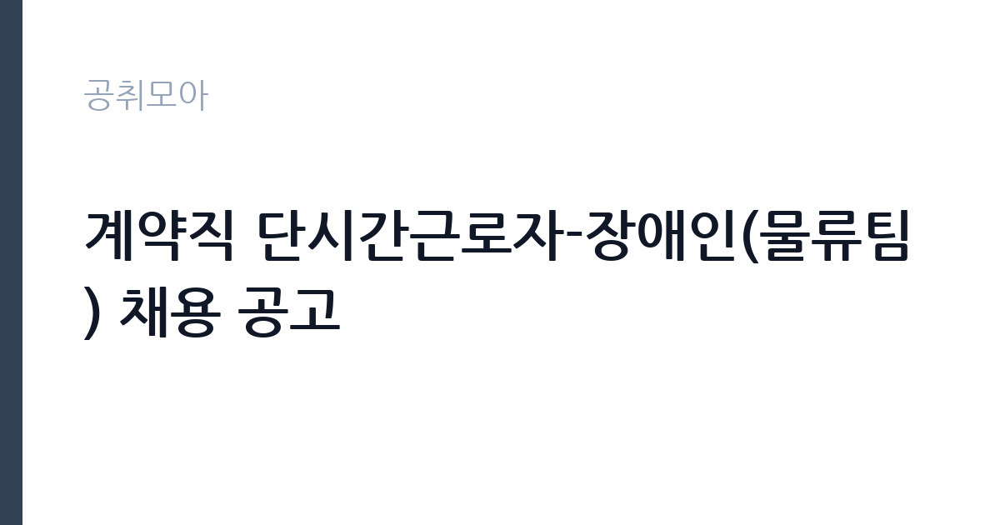

[공공기관] 계약직 단시간근로자-장애인(물류팀) 채용 공고
국립중앙의료원 · 서울 · 마감 2026-11-16 (D-14) · 출처 잡알리오

한눈에 보는 모집 조건
| 기관 | 국립중앙의료원 |
|---|---|
| 공고명 | 계약직 단시간근로자-장애인(물류팀) 채용 공고 |
| 고용형태 | 기간제 |
| 근무지 | 서울 |
| 게시일 | 2026-11-02 |
| 마감일 | 2026-11-16 (D-14) |
지원자격, 이렇게 읽으세요
- 종합병원 물품 관리 1년 이상 근무 경력자
기간제 근로자는 근로계약 기간이 정해진 신분입니다. 계약 기간과 갱신 가능 여부가 근로계약서에 명시되며 기간 만료 시 근로관계가 종료됩니다. 결원 보충이나 특정 사업 기간에 맞춰 채용되는 경우가 많아 업무 범위가 명확합니다. 이번 공고는 국립중앙의료원이 직접 진행하는 자체 전형입니다. 법무 직무는 변호사 자격이 필수입니다. 대한변호사협회 등록 여부와 개업 상태를 확인하며, 일부 공고는 특정 분야 경력 연수를 요구합니다. 일반임기제공무원으로 채용되면 임용 기간과 연봉등급이 정해지고, 계약직이면 근로계약 기간이 명시됩니다. 사내변호사 형태는 정규직 채용으로 수습 기간이 설정되기도 합니다. 겸직 제한과 이해충돌 방지 관련 규정을 확인해야 합니다. 응시 자격 판단이 애매하면 접수 전에 채용 담당 부서로 문의하는 편이 안전합니다. 자격 취득 예정자는 채용 공고의 예정자 허용 조항을 먼저 확인해야 합니다. 조항이 없으면 지원 자체가 반려될 수 있습니다. 경력 요건은 총 경력이 아니라 해당 직무 경력만 인정하는 경우가 있으니, 증명서의 직무 기술을 함께 확인하십시오. 이 공고 원문에 적힌 응시 조건 문구는 '종합병원 물품 관리 1년 이상 근무 경력자'입니다. 문구를 그대로 읽고 본인 해당 여부를 하나씩 표시해 두면 서류 단계에서 탈락하는 일을 줄일 수 있습니다.
이 공고의 포인트
이 공고의 첫 번째 포인트는 고용 형태입니다. 계약 기간이 정해져 있어 근무 종료 시점이 명확합니다. 그만큼 짧은 기간에 어떤 실적을 남길지가 중요해집니다. 두 번째는 업무 범위가 명확하다는 점입니다. 법무 직무로 채용되므로 배치 이후 담당 업무가 크게 흔들리지 않습니다. 세 번째는 근무지입니다. 서울 지역 근무로 접근성은 좋지만 그만큼 지원자가 몰리는 지역이므로 경쟁률을 넉넉히 잡아야 합니다. 자격 요건이 까다롭지 않은 대신 지원자가 몰리는 유형의 공고입니다. 같은 직무로 함께 올라온 공고 8건 가운데 마감이 중간에 위치하므로 다른 공고와 일정이 겹치는지 확인하십시오. 선발 인원은 공고문에 명시되어 있으니 모집분야 항목을 함께 확인하십시오.
전형은 어떻게 진행되나
전형은 서류심사와 면접심사를 기본으로 하고 직무에 따라 필기나 실기, 체력검정이 추가됩니다. 서류 단계에서는 응시자격 충족 여부와 제출서류 형식을 확인하며 이 단계에서 탈락하는 지원자가 적지 않습니다. 면접은 직무 이해도와 경험을 확인하는 방식으로 진행되고 발표는 개별 통보나 홈페이지 게시로 이뤄집니다. 최종합격 이후에는 결격사유 조회와 채용 신체검사가 이어지며 이 절차에서 문제가 확인되면 합격이 취소될 수 있습니다. 구체적인 전형 단계와 배점은 공고문에 표로 정리되어 있으니 원문을 기준으로 준비하십시오. 자격증 취득 예정자로 지원했다면 취득 증명 제출 기한을 반드시 지켜야 합니다.
원문에서 확인한 전형 방식
[필수] 아래 조건을 모두 충족하는 자 ·「장애인복지법」에 따라 등록된 장애인 또는 「국가유공자 등 예우 및 지원에 관한 법률」에 따른 상이등급 기준에 해당하는 자 ·물품 포장관리 및 배송 업무 수행 가능자 [우대] ·종합병원 물품 관리 1년 이상 근무 경력자
이런 분께 추천해요
- 변호사 자격을 보유하고 등록 요건을 충족하는 분
- 해당 분야 소송·자문 경력이 있는 분
- 공공기관 이해충돌 규정을 준수할 수 있는 분
지원 전 체크리스트
- 응시자격 요건과 경력 기준을 충족하는가 — 경력은 증명서로 입증해야 합니다
- 계약 기간과 근무 시작일·종료일을 확인했는가
- 제출서류 목록을 모두 준비했는가 — 누락 시 서류 단계에서 탈락합니다
- 접수 마감 2026-11-16 이전에 접수 방식을 확인해 제출했는가
모집 일정과 제출 타이밍
접수 마감은 2026-11-16이고 공고는 2026-11-02에 게시되었습니다. 준비 기간 14일 안에 서류 작성, 증빙 발급, 접수를 모두 마쳐야 하므로 주말을 포함해 일정을 미리 나누는 것이 좋습니다. 특히 경력 기술서나 직무수행계획서를 요구하는 공고는 작성에 시간이 걸리므로 첫날 초안을 잡으십시오. 서류 합격자 발표와 면접 사이 간격이 짧은 경우가 많아 면접 예상 질문은 서류 제출 전에 정리해 두는 편이 유리합니다. 마감 직전에는 접속이 몰리므로 여유를 두고 제출하십시오. 제출 서류는 공고문에 적힌 순서대로 정리하면 담당자가 확인하기 쉬워 누락이 줄어듭니다.
직무 이해하기: 공공기관
이 기관은 공공 서비스 제공을 목적으로 설립된 공공기관으로, 채용 공고에 따라 부서별 실무 인력을 선발합니다. 기관의 사업 범위와 조직 구성은 홈페이지에서 확인할 수 있으며 채용 절차는 자체 인사 규정을 따릅니다. 법무 업무는 기관의 소송과 계약, 규정 해석을 지원하는 일입니다. 소송 사건의 진행 상황을 관리하고 준비서면 초안을 작성하며 외부 대리인과 협의합니다. 계약서 검토와 법령 해석 질의 응답, 내부 규정 정비도 주요 업무입니다. 최근에는 개인정보와 국제거래, 투자 분쟁처럼 전문 분야가 세분화되어 해당 분야 경력을 요구하는 공고가 늘었습니다. 기관 성격에 따라 자문 중심과 소송 중심으로 업무 비중이 갈립니다. 이 직무는 담당 구역이 정해져 있어 근무지에 따라 실제 업무 환경이 달라집니다. 업무 강도와 근무 시간대는 부서 배치에 따라 달라지므로 면접에서 확인하는 것이 가장 정확합니다. 원문에 '종합병원 물품 관리 1년 이상 근무 경력자'라는 조건이 명시되어 있습니다.
자기소개서 작성 팁
법무 지원서는 수행 사건과 계약 검토 실적을 중심으로 구성하십시오. 사건 유형, 본인이 맡은 역할, 결과를 구체적으로 쓰고 지원 기관의 업무와 연결되는 분야를 강조하십시오. 정책이나 제도 개선에 기여한 경험이 있다면 차별화 요소가 됩니다. 공직 수행에 필요한 이해충돌 관리 의식을 한 문단 넣으면 신뢰를 줍니다. 직무 경험이 많지 않다면 경험의 양보다 과정을 구체적으로 쓰는 편이 낫습니다. 어떤 상황에서 무엇을 판단했고 어떤 결과가 나왔는지 순서대로 서술하면 신뢰가 생깁니다. 지원 동기와 기여 방안은 한 문단씩 짧게 유지하고, 가장 자신 있는 경험에 분량을 몰아주십시오. 마지막 문장은 포부보다 구체적인 실행 계획으로 끝내는 것이 좋습니다.
면접 준비 포인트
면접에서는 실제 사건 처리 경험과 법적 판단 능력을 확인합니다. 복잡한 법률관계를 정리해 결론을 도출한 사례를 요구하며, 기관 업무와 관련된 분야의 이해도를 봅니다. 이해충돌 상황에서 어떻게 판단할지 묻는 질문도 나옵니다. 답변은 결론과 근거 법리를 함께 제시하는 방식이 효과적입니다. 면접 당일 신분증과 제출서류 원본을 요구하는 경우가 있으니 공고문의 준비물 목록을 확인하십시오. 마지막 질문 시간에는 근무 조건에 대한 확인 사항을 한 가지 정도 준비해 가면 성실성이 드러납니다.
급여·근무조건 읽는 법
알리오(공공기관 경영정보 공개시스템) 2025년 결산 경영공시 기준으로 국립중앙의료원 일반정규직 1인당 평균보수액은 7,865만원, 공시된 신입사원 초임은 3,751만원입니다. 평균보수액은 기본급에 고정수당·실적수당·성과상여금·급여성 복리후생비를 모두 합산한 값이라 월 기본급만 보고 판단하면 실제와 크게 어긋납니다. 이번 공고는 기간제 채용이라 위 정규직 평균보수는 그대로 적용되지 않습니다. 기간제 보수는 기관의 기간제 임금 기준을 따르며 계약 기간이 함께 정해집니다. 법무 직무의 보수는 채용 형태에 따라 구조가 다릅니다. 일반임기제공무원은 연봉등급제가 적용되어 등급별 상한액과 하한액 범위에서 연봉이 정해지고 임용 기간이 함께 명시됩니다. 사내변호사 형태의 정규직은 기관 임금체계와 성과급 규정을 적용받습니다. 계약직은 연봉 총액과 계약 기간이 개별로 정해지므로 총 보상 규모를 따져야 합니다. 구체적인 금액은 공고문의 보수 항목에서 확인하십시오. 2026년 적용 최저임금은 시급 10,320원, 월 환산 2,156,880원(주 40시간·209시간 기준)입니다. 고용노동부 고시 제2025-47호로 확정된 금액입니다. 공고문에 금액이 제시되지 않은 항목은 원문 보수표나 처우 설명에서 확인해야 하며 확인되지 않은 수치는 쓰지 않는 것이 원칙입니다. 비교할 때는 월 급여뿐 아니라 상여·명절휴가비·복지포인트·초과근무수당까지 포함한 연간 총액으로 계산하십시오. 기간제라면 계약 기간 동안의 총액을, 무기계약이라면 호봉 상승과 정년까지의 누적 소득을 기준으로 판단하는 편이 정확합니다.
자주 묻는 질문
- 선발 인원은 몇 명인가요?
공고문의 모집분야 항목에 직종별 인원이 표로 제시되어 있습니다. 첨부된 공고문 원문에서 확인하십시오. - 근무지는 어디인가요?
서울 지역의 국립중앙의료원 소속 근무지입니다. 세부 주소와 출퇴근 조건은 원문 공고문에서 확인할 수 있습니다. - 보수는 얼마인가요?
채용 신분(기간제)과 기관 임금 규정에 따라 정해지며 구체적인 금액은 공고문 처우 항목에 제시됩니다. 금액이 공개되지 않은 경우에는 원문의 보수표를 확인하십시오.
함께 보면 좋은 공고
[공공기관] 2026년 한국특허정보원 체험형 청년인턴 채용 — 마감 2026-11-18[공공기관] 한국폴리텍대학 진주캠퍼스 행정지원직(사무직원 휴직 대체인력) 채용 공고 — 마감 2026-11-10[공공기관] 대구경북첨단의료산업진흥재단 2026년 3차 정원외 계약직원 채용공 — 마감 2026-11-17출처: 잡알리오 공개정보를 바탕으로 공취모아가 정리한 안내글입니다. 모집 조건·일정은 변경될 수 있으니 지원 전 반드시 원문 공고문을 확인하세요. 본 글은 정보 제공용이며 합격을 보장하지 않습니다.